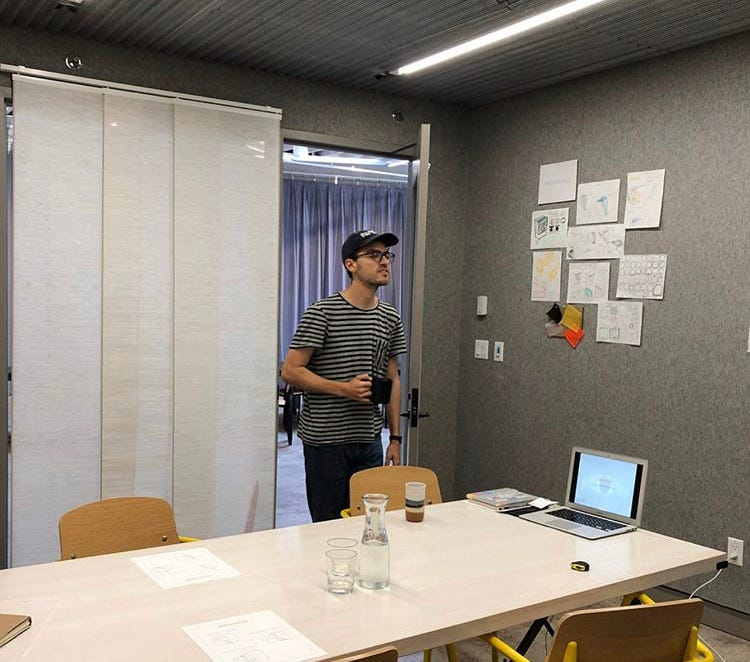
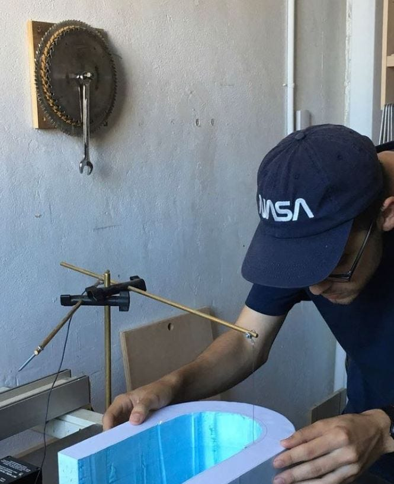
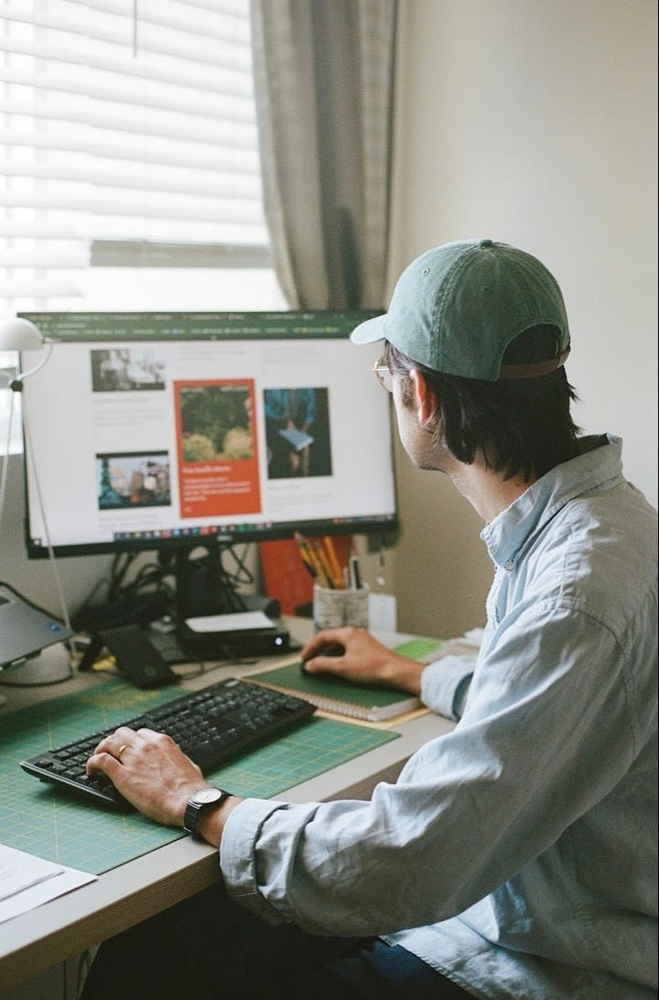

writing
Be an idea expander
Ten ideas for 2024
published on 12.19.23jake weber


- Be an idea expander. Listen to ideas without judgement and allow the possibilities (“how could this work?” or “how might this be true?”) to exist before shrinking them down (“why will this fail?” or “why is this false?”). The world shrinks and grows in proportion to your imagination. A new idea is a fragile idea, it will be small and easy to ridicule. It is your job to protect fragile ideas and grow them.
- Alternatives over Competition. Jason Fried voiced this on Lenny’s podcast recently; don’t think of what you do as being a competitor with something similar, but instead make it a true alternative. It rhymes with James Dyson’s advice that by simply increasing variation you can succeed. Do the other thing, try it the other way, do not seek refuge in the false comfort of consensus. Again, I am reminded of Kevin Kelly’s “don’t aim to be the best, be the only” and Ender Wiggins’ “the enemy gate is down”.
- Focus on how it feels to do something. When trying to find your path, follow what feels best. Whenever you find yourself making a pros and cons list, it is time to pause and reflect. Be skeptical of thinking your way to the right option. Here are some questions: are you excited for the next chance to work on it? do you have too many ideas or too few?do you feel free? if you weren’t allowed to tell anyone about it, would you still want to do it?
- Build a world. Make your projects and work a vessel for self-expression. Make your software match your vibe. Make reading your book feel like it feels to talk with you. Customize, make it bespoke, put yourself into it instead of doing what you feel you should. This has all kinds of benefits (reducing burn out for instance) but especially helps with number two above.
- Do not resist other people. Everyone has their own ways of doing things, their own neuroticism, pet peeves, and inner nature. Do not resist these in someone else, either accept them or don’t spend time together.
- Build a toy before a business. Don’t start with the premise of “I want to start a business” and then try to think of an idea. Instead play with ideas that are innately interesting to you and be attentive to how they might expand into something larger. Prioritize the small, weird, silly weekend project without fear of “how does this scale?”
- Simplicity kills resistance. Whether it’s writer’s block or fear of launching your MVP, overcome the resistance by asking yourself how you can make it simpler. Can’t figure out that Stripe integration? Make people pay with a form and then send them the login link. Can’t figure out the plot device to get your hero out of danger? Write a horribly deus ex machina placeholder and move on for now.
- Be small. A lot of our culture defines success as “big”, whether money raised, money made, amount of users, or amount of views. But is that your definition of success? Have you considered the downsides to being big and the upsides to being small? How can you 10x the metrics you personally care about? If I 10x’d Printernet’s revenue, I’d be ecstatic, but not a single VC would be impressed. But why would I care? It’s easy to get caught up in “going big”. Be small.
- You don’t want to know what happens next. Seek out the thrilling and uncomfortable situations where you are uncertain of the outcome. The best things in life happen when you try something new. Find the minor and major opportunities for novelty.
- Creativity likes empty space. Allow yourself uninterrupted time to think and work on the things that you are curious about. Be ok saying no to interesting things to protect the space to work on your interests.


Collected reading on this topic
comments